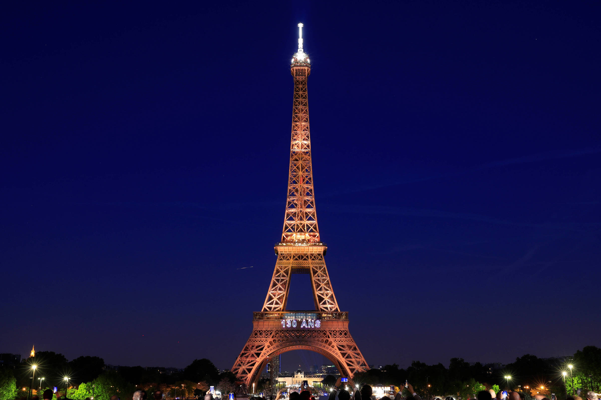
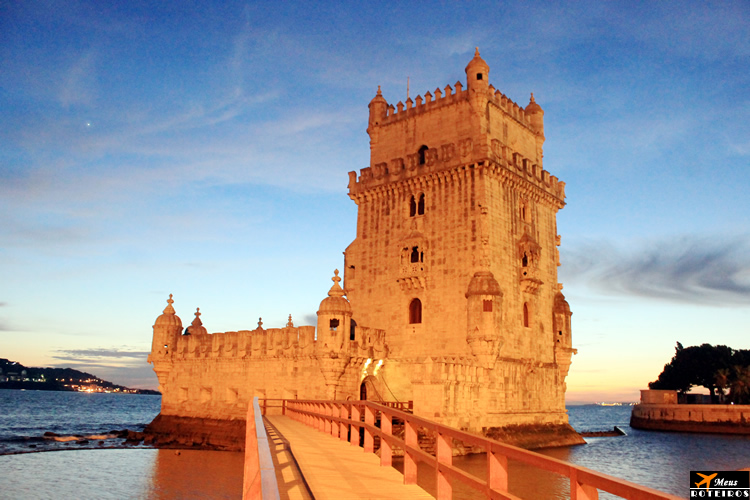

Explorando a Europa
Explore os destinos imperdíveis na Europa.
-
Torre Eiffel
A Torre Eiffel, símbolo de Paris, foi construída em 1889 para celebrar a Revolução Francesa.
Com 325 metros de altura e 1.665 degraus, oferece vistas deslumbrantes da cidade. -
Coliseu de Roma

O Coliseu de Roma, também conhecido como Anfiteatro Flaviano, é um dos principais pontos turísticos da Itália,
atraindo mais de 4 milhões de visitantes anualmente desde o seu início em 72 d.C. -
Torre de Belém – Portugal
A Torre de Belém, um ícone da história portuguesa, ergue-se majestosamente à beira do rio Tejo.
Construída entre 1514 e 1520 durante a Era das Navegações, essa fortaleza imponente serviu como guarda avançada
para proteger Lisboa de invasores. Hoje, é um dos destinos turísticos mais visitados da Europa,